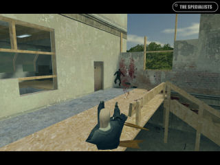
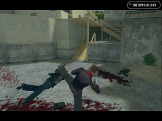
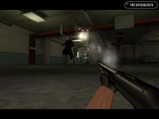
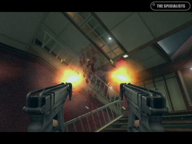
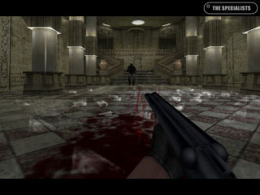
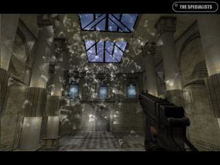

| Post Release Plans |
Author:
Schmung ::
Posted:
Tue Jul 31, 2007 4:55 pm
Hello folks, well, it's been a month (and a bit) since the release of 3.0 and we've had some time to sit back and bask in the post release glow. There's plenty of servers and players about and the overall reaction seems pretty positive. So, with TS finally out the door, we thought we'd give you a bit of an update on what else we've being doing.
Morfeo and John_Matrix, the Italian masterminds behind TS are working on a new game and are currently busy preparing an initial demo. You'll be hearing more about that from the men themselves in due course.
Vino has launched into development of a new game on the Source engine. Calamity Fuse is a multiplayer realtime RPG/FPS inspired by Final Fantasy 7. He is currently in the production phase and needs good artists to help create the game. The team is partnering with Valve for distribution and engine use.
Me? Well, mostly real-life. Tedious stuff like working for a living. I did however find time to do a bit of modelling and contributed a few bits to Off-Limits a very promising source mod with quite unique gameplay. Well worth a look once it's released.
There's also this :
You'll be hearing more about that little project very soon.
We're also toying with the idea of releasing a community mappack to support the new gamemode in 3.0, Capture The Briefcase, but that obviously depends rather on the feedback from you guys. If you've anything to say on the matter then please do so on our forums.
|
| TS 3 : Here it is. |
Author:
Schmung ::
Posted:
Thu Jun 21, 2007 10:50 pm
No terrible pun, no vast news post. Just the release of TS3. We got a great response from the community when we asked for some mirrors, so a huge thank you to everyone who has donated space and bandwidth. Forum names are listed alongside mirror URL.
You can find all the downloads on our download page.
We'll keep the downloads section of the website up to date for you and probably add some more media, including videos. After that, well, expect to hear a little more me and hopefully a word or two from Morfeo and Vino as well.
Finally, the dev team would like to say a big thank you to the loyal supporters of the mod who have waited patiently and indeed, not so patiently over the past few years of development.
Edit : 8 hours since release and it would seem we're on the front page of Digg, huzzah! Summary here
I've also added a few more mirrors. We're getting good feedback about the torrent as well, so thanks to all the people seeding.
Here is a short list of changes in 3.0:
- Vastly improved player movement and stunts
- Improved/tweaked weapons balance, handling and effects
- New game mode: Capture The Briefcase
- New weapons
- New maps
- New stunts
- New kung fu attacks
- Enhanced slow-motion dynamics and effects
- Enhanced visual effects and graphics
- Throwing katanas
- Improved particles effects and physics
- The version number was increased by 0.9
|
| The Final Countdown |
Author:
Schmung ::
Posted:
Tue Jun 19, 2007 12:35 pm
It's been a long time coming and at times it looked like we'd never see this day, but we are finally here. TS3 is done and will be released this weekend.
We're currently sorting out mirrors for the final installer and putting together some media before we release it to the masses this weekend. Final date and time have yet to be set and are subject to the availability of certain people, prevailing winds, the rising moon in Venus and various other factors.
It looks good, the final RC push lasted a little longer than expected while some kinks were smoothed out and gameplay tweaks were discussed, adjusted and discussed again. I say discussed. It was more of a very lengthy argument punctuated with new releases and more arguments. Still, the miraculous seems to have occurred and most people seem pretty happy with the version thats been declared final.
If you can offer us a nice stable mirror for the final installer with plenty of bandwidth then register on the forums and drop me a PM. We'd like to get as many mirrors as possible to ensure everyone can grab the file quickly and we'll also be offering a torrent that will (hopefully) have plenty of seeders from the minute the release announcement goes out.
p.s apologies for the newspost title, I couldn't resist.
|
| Join our community! |
Author:
Vino ::
Posted:
Mon Apr 30, 2007 7:53 pm
Here at The Specialists we pride ourselves in being community-awesome. I bet you thought I was going to say "community-friendly." Well you were wrong, because our community is not just friendly, it is awesome. The TS forums are one of the longest-living, most dynamic, and most fun-to-hang-out places on the internet. (Or, at least compared to other mods  ) This is why I am personally inviting YOU to join our community and say hello. Don't be scared. We don't bite. ) This is why I am personally inviting YOU to join our community and say hello. Don't be scared. We don't bite.
But why should you join our community, you say? Well, recently lots of cool things have been going on with The Specialists. We are nearing very close to the final release of the first version in, what, two or three years! Lots of things are happening, and I for one am very proud to be a part of it. The new version has lots of great stuff, like new weapons to kill people with, new maps to kill people in, new lots of new ways to be awesome in general. You're really missing out if you don't. Tell them Vino sent you.
Be there or be: [] rectangle.
|
| Media Ahoy! |
Author:
Schmung ::
Posted:
Tue Apr 24, 2007 10:22 pm
As promised, some more media, click the thumbnails for full-size images.
First up, a shot of newly redecorated Hammertime.

Again, it's new and rather more attractive hammertime. This time castor is delivering a rather painful kick that appears to have gotten the better of hitman. You can tell that due to the absurd amounts of blood spewing forth from his head.

Now to that old favourite GPC, where, despite aiming at a pipe, one of our RC testers has managed to kill someone with a shotgun. Good for him.

Antro next, for a spot of Skorpion rage. You can't see the HUD, but this fellow is using free full and is spitting bullets from both guns at once. Resulting in more fountains of blood. Marvellous.

To NeoBaroque next, another map that's had a facelift. Though I have to confess that at no point in my experience with re-decoration and DIY have I ever felt the need to add a thunderstorm to my house. Judging from the amount of blood on the floor and the glass everywhere I would guess that whoever took this was enduring a hail of gunfire and died shortly after pressing F12.

NeoBaroque again. One of our RC testers apparently hates windows, as you can see from the glass cascading down upon him. He said that unless I posted this screen, he was going to come round and break my windows. Frankly, living as I do in rented accommodation, I just didn't want to run the risk.

There is a buzz of activity here at present. RC testers are flooding servers in large numbers and map and code updates are flying out with previously unseen rapidity. The finish line is in sight and everyone seems to be giving their all. Most gratifying. Many thanks to the testers for the above screenies as well. Cheers guys,
Hopefully we'll be able to give you guys some gameplay vids or similar prior to release, but at present most people are rather pre-occupied with the important business of leaping off of high ledges and shooting other people in the face. Which is, of course, what TS is all about.
I'll be back soonish with more news, so keep 'em peeled. That is assuming of course that I manage to retain any lucidity whatsoever and that I am not unceremoniously removed from news posting duties to the rambling nature of the gibberish thats appears alongside the images posted here.
|
|